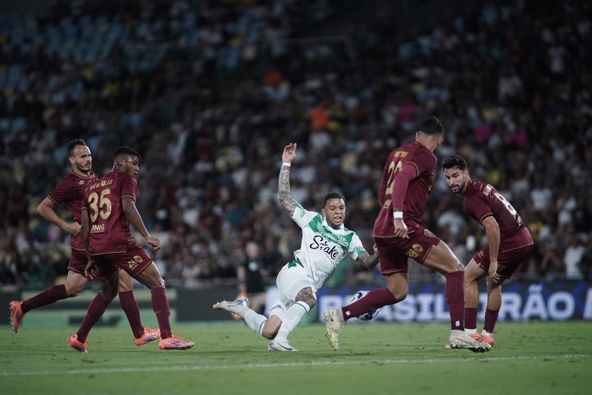

Juventude tenta abandonar o campo após gol do Fluminense no Maracanã
Uma cena inusitada marcou o Brasileirão neste fim de semana. Durante a partida entre Fluminense e Juventude, no Maracanã, os jogadores do time gaúcho tentaram deixar o campo em protesto contra a arbitragem. O lance polêmico aconteceu aos 53 minutos do segundo tempo, quando o árbitro aplicou a regra dos 8 segundos contra o goleiro do Juventude, resultando em um escanteio para o Fluminense. Na sequência, o time carioca marcou o gol da virada. Inconformados, atletas como Alan Ruschel e Nenê teriam se revoltado, afirmando que o time não continuaria a partida. Diante da recusa em reiniciar o jogo, o árbitro encerrou o confronto e relatou o episódio na súmula. O caso agora deve ser analisado pelo STJD, e o Juventude pode ser punido por tentativa de abandono de campo. O episódio gerou grande repercussão nas redes sociais e reacendeu o debate sobre os critérios da arbitragem brasileira.
17/10/2025 Assistir Notícia